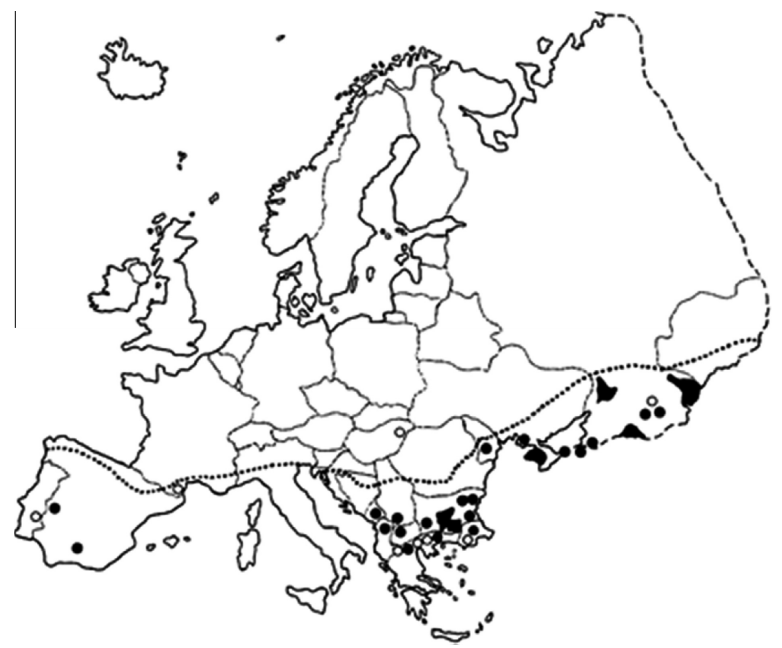

Crimean-Congo Hemorrhagic Fever Virus
Christopher Wetherill
TBMH 5054
Crimean-Congo Hemorrhagic Fever Virus
- Tick-borne virus
- Typically transmitted by ticks of the Hyalomma genus
- Has been isolated from at least 31 different species (although most are not competent vectors)
- Three-stranded negative-sense ssRNA virus
- Seven distinct genotypes have been identified
- Estimated to have evolved around 3500 years ago based on Bayesian coalescent analysis of viral gene segments
- First likely report of CCHFV comes from 12th century account in modern-day Tajikistan
Epidemiology

doi: 10.1016/j.antiviral.2013.07.006
Epidemiology

doi: 10.1016/j.antiviral.2013.02.007
Epidemiology
doi: 10.1016/j.antiviral.2013.02.007
Clinical Presentation
- 1–3 day incubation period following tick bite
- Flu-like symptoms (generally resolve within 7 days)
- Signs of hemmorhage appear within first week
- Petechiae (purple spots on skin)
- Swollen, painful liver
- Death in about 30% of cases; resolution after 10 days in the remainder
Diagnosis
- ELISA, RT-PCS, virus isolation, antibody detection
- With compatible clinical history, infection can be diagnoses during acute phase
- Following viral resolution, circulating antibodies against pathogen can be detected
Life Cycle & Replication
- It's a black box! Isn't that fun?
- Some evidence to suggest clathrin-, pH-, cholesterol- and microtubuls-dependent steps
- Maybe because it has low incidence/prevalence (~1000 new cases/year) and requires a BSL-4 lab to study?
Host Immune Responses
- Although geographically widespread, little is known about CCHFV's pathogenesis
- One theory is that virus interacts with endothelial cells directly
- Alternately, may interact with endothelial cells indirectly through immune cells, promoting release of soluble mediators
- Some evidence of innate immunosuppression by the virus and delay of adaptive response
Host Immune Responses
doi: 10.1089/vbz.2012.1061
Host Immune Responses
doi: 10.1089/vbz.2012.1061
Current Therapies
- No preventative treatments exist
- Current standard of care is primarily supportive management
- Daily monitoring of complete blood count, serum electrolyte levels, coagulation indices
- Hydration
- Replacement of blood products as necessary with, e.g., fresh frozen plasma, erythrocyte, platelet solutions
- Avoid anti-coagulants
- Administration of Ribavirin (typical Hep C treatment)
- Seems to inhibit viral growth
- May offer survival benefit (no RCTs have been conducted...)
Prospects for Drug Development
- Attempts to develop CCHF vaccines date back to 1960s
- Inactivated vaccine approved in 1970
- Neutralizing antibodies developed within 1 month
- Titers decreased within 6 months
- No efficacy data were ever published
- Potential for DNA vaccine encoding CCHF genome M segment
References
Akinci, E., Bodur, H., & Leblebicioglu, H. (2013). Pathogenesis of Crimean-Congo hemorrhagic fever. Vector-Borne and Zoonotic Diseases, 13, 429 - 437. doi: 10.1089/vbz.2012.1061
Bente, D., Forrester, N., Watts, D., McAuley, A., Whitehouse, C., & Bray, M. (2013). Crimean-Congo hemorrhagic fever: History, epidemiology, pathogenesis, clinical syndrome and genetic diversity. Antiviral Research, 100, 159 - 189. doi: 10.1016/j.antiviral.2013.07.006
Keshtkar-Jahromi, M., Kuhn, J., Christova, I., Bradfute, S., Jahrling, P., & Bavari, S. (2011). Crimean-Congo hemorrhagic fever: Current and future prospects of vaccines and therapies. Antiviral Research, 90, 85 - 92. doi: 10.1016/j.antiviral.2011.02.010
Mardani, M., Rahnavardi, M., & Sharifi-Mood, B. (2010). Current treatment of Crimean-Congo hemorrhagic fever in children. Expert Review of Anti-Infective Therapy, 8, 911 - 918. doi: 10.1586/eri.10.67
Mertens, M., Schmidt, K., Ozkul, A., & Froschup, M. (2013). The impact of Crimean-Congo hemorrhagic fever virus on public health. Antiviral Research, 98, 248 - 260. doi: 10.1016/j.antiviral.2013.02.007
Simon, M., Johansson, C., & Mirazimi, A. (2009a). Crimean-Congo hemorrhagic fever virus entry and replication is clathrin-, pH- and cholesterol dependent. Journal of General Virology, 90, 210 - 215. doi: 10.1099/vir.0.006387-0
Simon, M., Johansson, C., & Mirazimi, A. (2009b). Microtubule-dependent and microtubule-independent steps in Crimean-Congo hemorrhagic fever virus replication cycle. Virology, 385, 313 - 322. doi: 10.1016/j.virol.2008.11.020